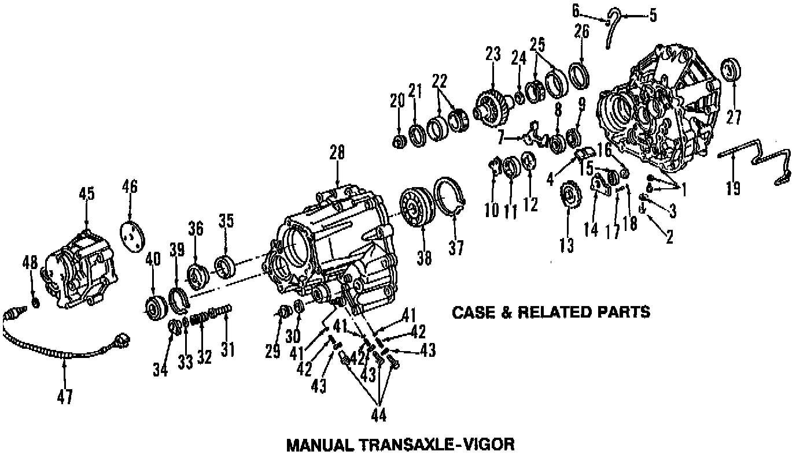
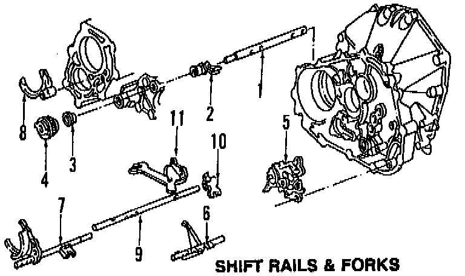
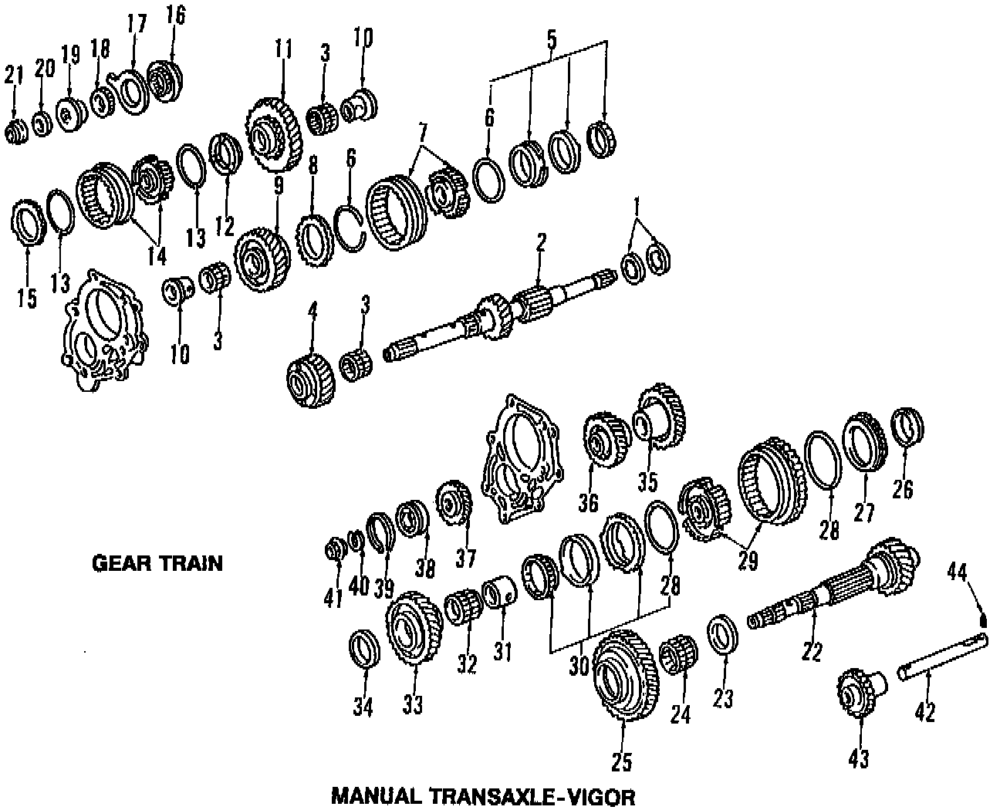
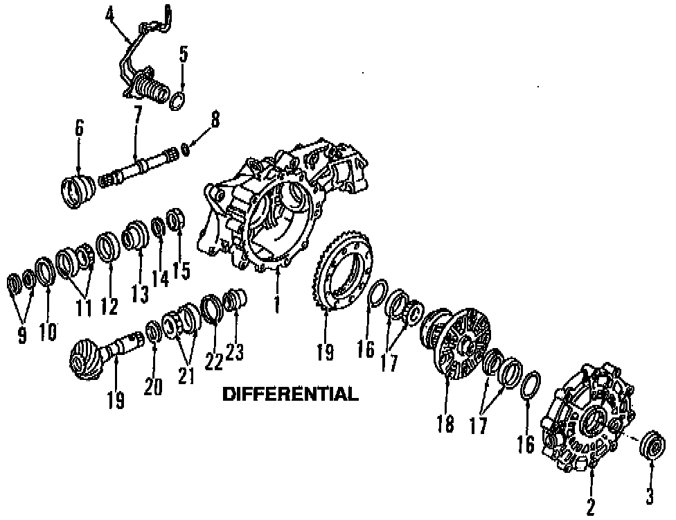

Operation CHARM
: Car repair manuals for everyone.
Home
>>
Acura
>>
1992
>>
Vigor L5-2451cc 2.5L SOHC G25A4 FI
>>
Parts and Labor
>>
Transmission and Drivetrain
>>
Manual Transmission/Transaxle
>>
Images
Images
Case & Related Parts:

Shift Rails & Forks:

Gear Train:

Differential:
